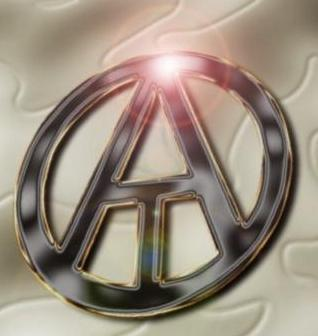
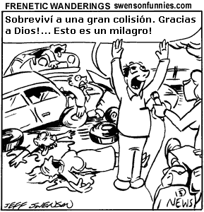
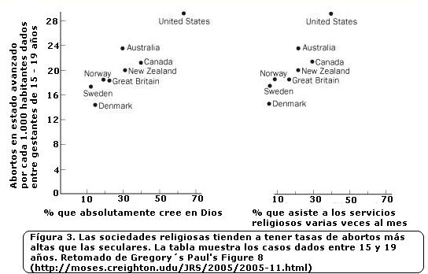
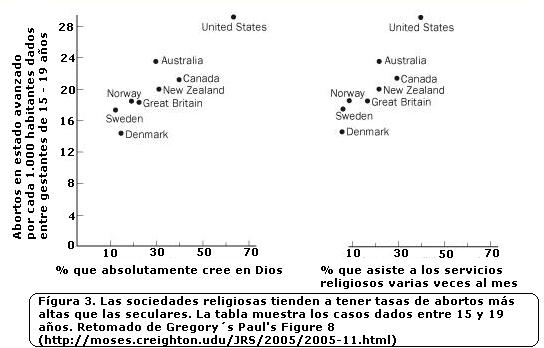

En algún lugar del mundo un hombre ha secuestrado a una niña. Pronto la violará, la torturará y la asesinará. Si una atrocidad de esta clase no ocurre precisamente en este momento, ocurrirá en unas horas, o a lo sumo en unos días. Tal es el grado de confianza que podemos extraer de las leyes estadísticas que gobiernan las vidas de 6 mil millones de seres humanos. La misma estadística sugiere también que los padres de estas niñas creen en este mismo instante que un Dios omnipotente e infinitamente bondadoso cuida de ellos y de su familia. ¿Tienen alguna razón para creer esto? Es más, ¿está bien que lo crean?
La respuesta a ambas preguntas es muy clara: NO.
Todo el ateísmo está contenido en la anterior respuesta. El ateísmo no es una filosofía; no es ni siquiera una opinión sobre el mundo; es simplemente el rechazo a negar lo evidente. Por desgracia, vivimos en un mundo en el que, por principio, lo evidente se pasa por alto. Lo evidente debe ser observado, vuelto a observar y defendido. Se trata de un trabajo ingrato. Lleva consigo una aureola de petulancia e insensibilidad. Además es un trabajo que el ateo no necesita.
Es preciso señalar que nadie necesita identificarse como un no-astrólogo o un no-alquimista. Por consiguiente, no tenemos ningún nombre para definir a las personas que niegan la validez de estas pseudo-disciplinas. De la misma forma, el ateísmo es un término que ni siquiera debería existir. El ateísmo no es más que la protesta manifestada por la gente razonable en presencia del dogma religioso. El ateo es simplemente una persona que cree que los 260 millones de americanos (el 87 % de la población) que afirman no dudar jamás de la existencia de Dios son los que están obligados a presentar pruebas de su existencia y, ciertamente, de su benevolencia, considerando la destrucción implacable de seres humanos inocentes de la que somos testigos a diario en el mundo. Sólo el ateo aprecia lo misteriosa que es nuestra presente situación: la mayor parte de los seres humanos creen en un Dios que, en todos los aspectos, es tan fantástico como los dioses del Olimpo; ninguna persona, independientemente de sus méritos y capacidades, puede acceder a un cargo público en los Estados Unidos si no afirma estar totalmente convencida de que ese Dios existe; y una gran parte de la política pública de nuestro país responde a tabúes religiosos y a supersticiones propias de una teocracia medieval. Nuestra circunstancia es abyecta, indefendible y aterradora. Podría incluso resultar graciosa si lo que estuviera en juego no fuera tan importante.
{kind=link}
Vivimos en un mundo donde todas las cosas, buenas y malas, finalmente resultan destruidas por el cambio. Los padres pierden a sus hijos y los hijos a sus padres. Los maridos y las esposas se separan en un instante, para no reencontrarse jamás. Los amigos se apartan unos de otros con celeridad, sin saber que no volverán a verse. Esta vida, cuando se inspecciona con un amplio vistazo, presenta poco más que un enorme espectáculo de pérdidas. La mayoría de la gente de este mundo, sin embargo, se imagina que existe una cura para todo lo anterior. Si vivimos correctamente —no necesariamente de manera ética, sino dentro del marco de ciertas creencias antiguas y de comportamientos estereotipados— conseguiremos todo lo que queramos después de morir. Cuando finalmente nuestros cuerpos nos fallen, tan sólo nos desharemos de nuestro lastre corpóreo para viajar a una tierra donde nos reuniremos con todas las personas a las que amábamos cuando vivíamos. Por supuesto, la gente demasiado racional y demás chusma serán excluidas de ese lugar feliz, y los que hayan suspendido su incredulidad mientras vivían será libres de disfrutar de dicho lugar para toda la eternidad.
Vivimos en un mundo lleno de sorpresas inimaginables —desde la energía de fusión que hace que el sol brille, hasta las consecuencias genéticas y evolutivas de esta danza luminosa sobre la Tierra a lo largo de los eones— y, a pesar de todo, el Paraíso se conforma a nuestros intereses más superficiales con la misma comodidad que un crucero por el Caribe. Lo anterior resulta extraordinariamente curioso. Si uno no supiera nada del asunto, pensaría que el hombre, en su temor a perder todo aquello que le gusta, había creado el Cielo, con su Dios de portero, a su propia imagen y semejanza.
Consideremos la destrucción que el Huracán Katrina trajo sobre Nueva Orleans. Más de mil personas murieron, decenas de miles perdieron todos sus bienes terrenales, y casi un millón fueron desplazadas. Es casi seguro que prácticamente toda persona que vivía en Nueva Orleans en el momento de la tragedia del Katrina creía en un Dios omnipotente, omnisciente y compasivo. ¿Pero qué hacía Dios mientras un huracán arrasaba su ciudad? Seguramente oyó los rezos de los ancianos y las mujeres que huían de la crecida de las aguas buscando la seguridad de sus azoteas, sólo para ahogarse lentamente en éstas. Eran personas de fe. Eran hombres y mujeres buenos que habían rezado durante toda su vida. Sólo el ateo tiene el coraje de admitir lo evidente: esta pobre gente murió hablando con un amigo imaginario.
Desde luego, hubo claros signos de que una tormenta de dimensiones bíblicas golpearía a Nueva Orleans, y la respuesta humana al consiguiente desastre fue trágicamente inepta. Pero fue inepta sólo a la luz de la ciencia. Los signos del avance del Katrina fueron extraídos de la Naturaleza muda a través de cálculos meteorológicos y de imágenes vía satélite. Dios no habló a nadie de sus proyectos. Si los residentes de Nueva Orleans se hubieran contentado con confiar en la caridad del Señor, no se hubieran enterado de que un huracán asesino se abatía sobre ellos hasta sentir en sus caras las primeras ráfagas de viento. Sin embargo, una encuesta realizada por el Washington Post reveló que el 80 % de los sobrevivientes del Katrina afirmaban que el acontecimiento había reforzado su fe en Dios.
Mientras el Huracán Katrina devoraba Nueva Orleans, casi mil peregrinos chiítas eran pisoteados hasta morir en un puente de Irak. No hay duda de que estos peregrinos creían vigorosamente en el Dios del Corán: sus vidas estaban organizadas en torno al hecho indiscutible de su existencia; sus mujeres caminaban veladas delante de él; sus hombres se mataban entre sí con regularidad por interpretaciones rivales de su palabra. Sería notable que un solo superviviente de esta tragedia perdiera su fe. Es más probable que los supervivientes se imaginen que ellos fueron salvados por la gracia de Dios.
Sólo el ateo reconoce el narcisismo y el autoengaño ilimitados de quien se cree “salvado por Dios”. Sólo el ateo comprende lo moralmente rechazable que es el hecho de que los supervivientes de una catástrofe se crean salvados por el amor de Dios, mientras este mismo Dios ha ahogado a niños en sus cunas. Puesto que el ateo se niega a disfrazar la realidad del sufrimiento del mundo con una empalagosa fantasía de vida eterna, el ateo siente en sus carnes lo preciosa que es la vida —-y qué terrible desgracia es realmente que millones de seres humanos sufran el más terrible menoscabo de su felicidad por ninguna razón en absoluto.
Es inevitable preguntarse cuán enorme y gratuita debe ser una catástrofe para que sacuda la fe del mundo. El Holocausto nazi no lo hizo. Tampoco el genocidio de Ruanda, aunque hubiera sacerdotes armados con machetes entre los autores. Quinientos millones de personas murieron de viruela en el siglo XX, muchos de ellos niños. Los caminos de Dios son ciertamente inescrutables. Parece que cualquier hecho, no importa lo desgraciado que sea, puede ser compatible con la fe religiosa. En los asuntos de la fe, hemos perdido cualquier tipo de contacto con la realidad.
Desde luego, las personas de fe afirman regularmente que Dios no es responsable del sufrimiento humano. ¿Pero de qué otro modo podemos entender la afirmación de que Dios es a la vez omnisciente y omnipotente? No hay ningún otro modo de entender el asunto, y es hora de que los seres humanos cuerdos lo asuman. Se trata del problema histórico de la teodicea, que deberíamos considerar ya resuelto. Si Dios existe, no puede hacer nada para detener las más terribles calamidades o no se preocupa por hacerlo. Dios, por lo tanto, es impotente o malvado. Los lectores piadosos realizarán ahora la siguiente pirueta: Dios no puede ser juzgado por las simples normas humanas de moralidad. Pero, desde luego, las normas humanas de moralidad son precisamente las que los fieles emplean en primer lugar para establecer la bondad de Dios. Y cualquier Dios que se preocupe por algo tan trivial como el matrimonio gay, o el nombre por el que los fieles se dirigen a él durante el rezo, no es tan inescrutable como parece. Si existiera, el Dios de Abraham sería bastante despreciable: no sólo sería indigno de la inmensidad de la creación, sino que sería indigno hasta del propio ser humano.
Hay otra posibilidad, desde luego, y es a la vez la más razonable y la menos odiosa: el Dios bíblico es una ficción. Como ha observado Richard Dawkins, todos somos ateos en lo que concierne a Zeus y Thor. Sólo el ateo ha comprendido que el dios bíblico no es en absoluto diferente de Zeus o de Thor. Por consiguiente, sólo el ateo es lo bastante compasivo para considerar la profundidad del sufrimiento humano en toda su abrumadora realidad. Es terrible que muramos y perdamos todo lo que nos gusta; es doblemente terrible que tantos seres humanos sufran innecesariamente mientras viven. Que gran parte de este sufrimiento pueda ser atribuido directamente a la religión —a los odios religiosos, las guerras religiosas, las ilusiones religiosas y las luchas religiosas por recursos escasos— es lo que hace del ateísmo una necesidad moral e intelectual. Es una necesidad, sin embargo, que sitúa al ateo en los márgenes de la sociedad. El ateo, sólo por mantenerse en contacto con la realidad, aparece vergonzosamente alejado de la vida de fantasía propia de sus vecinos.
La naturaleza de la creencia
Según varias encuestas recientes, el 22 % de los americanos están totalmente convencidos de que Jesús volverá a la Tierra algún día durante los próximos 50 años. Otro 22 % cree que lo anterior es bastante probable. Seguramente este mismo 44 % de americanos son los que van a la iglesia una vez por semana o más, que creen literalmente que Dios prometió la tierra de Israel a los judíos, y que quieren prohibir la enseñanza del hecho biológico de la evolución a nuestros hijos. Como bien sabe el Presidente George W. Bush, los creyentes de esta categoría constituyen el segmento más cohesionado y motivado del electorado americano. Por consiguiente, sus opiniones y prejuicios influyen en casi todas las decisiones de importancia nacional. Los políticos liberales parecen haber extraído una lección incorrecta de estos acontecimientos y han vuelto su mirada hacia las Escrituras, preguntándose cómo podrían congraciarse con las legiones de hombres y mujeres de nuestro país que votan en gran parte en base al dogma religioso. Más del 50 % de los americanos tiene una opinión “negativa” o “sumamente negativa” de la gente que no cree en Dios; el 70 % piensa que es muy importante que los candidatos a la presidencia sean “firmemente religiosos”. La irracionalidad se encuentra ahora en ascenso en los Estados Unidos —en nuestras escuelas, en nuestros tribunales y en cada rama del gobierno federal. Sólo el 28 % de los americanos cree en la evolución; el 68 % cree en Satán. Una ignorancia de este calibre, concentrada tanto en la cabeza como en el vientre de una superpotencia sin rival, es ahora un problema para el mundo entero.

Aunque sea bastante fácil para la gente de buen tono criticar el fundamentalismo religioso, la llamada “moderación religiosa” todavía disfruta de un gran prestigio en nuestra sociedad, incluso dentro de la torre de marfil. Lo anterior resulta irónico, ya que los fundamentalistas tienden a hacer un uso de sus cerebros más basado en principios que los “moderados”. Aunque los fundamentalistas justifiquen sus creencias religiosas con pruebas y argumentos extraordinariamente pobres, al menos intentan dar una justificación racional. Los moderados, en cambio, generalmente no hacen más que citar las consecuencias benéficas de la creencia religiosa. En lugar de decir que creen en Dios porque ciertas profecías bíblicas se han cumplido, los moderados dirán que ellos creen en Dios porque esta creencia “da sentido a sus vidas”.
Cuando un tsunami mató a cien mil personas el día siguiente al de Navidad, los fundamentalistas interpretaron fácilmente este cataclismo como una prueba de la ira de Dios. Al parecer, Dios había enviado otro mensaje oblicuo a la humanidad sobre los males del aborto, la idolatría y la homosexualidad. Aunque moralmente obscena, esta interpretación de los acontecimientos es ciertamente razonable, considerando ciertas suposiciones (absurdas). Los moderados, en cambio, rechazan extraer cualquier conclusión sobre Dios a partir de sus obras. Dios sigue siendo un perfecto misterio, una mera fuente de consuelo que es compatible con la existencia del mal más desolador. Ante desastres como el tsunami asiático, la piedad liberal es apta para producir las más afectadas y pasmosas tonterías imaginables. Así y todo, los hombres y mujeres de buena voluntad prefieren habitualmente tales vacuidades a la moralización y profetización odiosas de los creyentes auténticos. Ante las catástrofes, sin duda es una virtud de la teología liberal que ésta enfatice la piedad sobre la ira. Vale la pena señalar, sin embargo, que es la piedad humana lo que se revela —no la de Dios— cuando los cuerpos hinchados de los muertos son arrojados por el mar. Durante días, cuando miles de niños son arrancados al mismo tiempo de los brazos de sus madres y ahogados en el mar, la teología liberal debe revelarse como lo que es —el más vacuo y estéril de los pretextos mortales. Incluso la teología de la ira tiene más mérito intelectual. Si Dios existe, su voluntad no es inescrutable. Lo único inescrutable en estos hechos terribles es que hombres y mujeres neurológicamente sanos puedan creer lo increíble y pensar que es la cumbre de la sabiduría moral.
Es completamente absurdo sugerir, como hacen los religiosos moderados, que un ser humano racional pueda creer en Dios simplemente porque esta creencia le hace feliz, porque alivia su miedo a la muerte o porque otorga sentido a su vida. La absurdidad se hace obvia en el momento en que cambiamos la noción de Dios por alguna otra proposición de consuelo: imaginemos, por ejemplo, que un hombre quiere creer que existe un diamante enterrado en algún lugar de su patio trasero, y que ese diamante es del tamaño de un refrigerador. Sin duda, se sentirá extraordinariamente bien al creer esto. Imaginemos qué pasaría entonces si ese hombre siguiera el ejemplo de los religiosos moderados y mantuviera dicha creencia según líneas pragmáticas: cuando se le pregunta por qué piensa que hay un diamante en su patio trasero y que además ese diamante es miles de veces mayor que ninguno aún descubierto, el hombre dice cosas como las siguientes: “Esta creencia da sentido a mi vida”, o “Mi familia y yo disfrutamos cavando para encontrarlo los domingos”, o “Yo no querría vivir en un universo donde no hubiera un diamante enterrado en mi patio trasero y que fuera del tamaño de un refrigerador”. Claramente estas respuestas son inadecuadas. Pero son peores que esto. Son las respuestas de un loco o de un idiota.
Aquí podemos ver por qué la apuesta de Pascal, el salto de fe de Kiergegaard y otros esquemas epistemológicos fideístas no tienen el menor sentido. Creer que Dios existe es creer que uno se encuentra en alguna relación con su existencia, tal que dicha existencia es ella misma la razón de la creencia de uno. Debe haber alguna conexión causal, o al menos una apariencia de la misma, entre el hecho en cuestión y la aceptación de ese hecho por parte de la persona. De este modo, podemos ver que las creencias religiosas, para ser creencias sobre el modo en que es el mundo, deben ser tan probatorias en el ámbito del espíritu como en cualquier otro ámbito. Pese a todos sus pecados contra la razón, los fundamentalistas religiosos entienden esto; los moderados —casi por definición— no lo entienden en absoluto.
La incompatibilidad entre la razón y la fe ha sido un rasgo evidente de la cognición humana y del discurso público durante siglos. Una persona tiene buenas razones para creer firmemente lo que cree o lo que no cree. Las personas de todos los credos generalmente reconocen la primacía de las razones, y recurren al razonamiento y a las pruebas siempre que pueden. Cuando la indagación racional apoya el credo, aquélla siempre es defendida; cuando representa una amenaza, es ridiculizada, a veces en la misma sentencia. Sólo cuando las pruebas a favor de una doctrina religiosa son escasas o inexistentes, o existe una evidencia aplastante en su contra, sus defensores invocan la “fe”. Dicho de otro modo, los fieles simplemente citan los motivos para defender sus creencias (por ejemplo, “el Nuevo Testamento confirma las profecías del Antiguo testamento”, “yo vi la cara de Jesús en una ventana”, “rezamos, y el cáncer de nuestra hija comenzó a remitir”). Tales razones son generalmente inadecuadas, pero son mejores que ninguna razón en absoluto. La fe no es más que la licencia que la gente religiosa se otorga a sí misma para seguir creyendo cuando las razones fallan. En un mundo que ha sido dividido por creencias religiosas mutuamente incompatibles, en una nación que se encuentra cada vez más sometida a concepciones propias de la Edad de Hierro acerca de Dios, el final de historia y la inmortalidad del alma, esta división perezosa de nuestro discurso en asuntos de razón y asuntos de fe es sencillamente inadmisible.
La fe y la buena sociedad
La gente de fe afirma regularmente que el ateísmo es responsable de algunos de los crímenes más espantosos del siglo XX. Aunque sea cierto que los regímenes de Hitler, Stalin, Mao y Pol Pot eran irreligiosos en diversos grados, no eran especialmente racionales. De hecho, sus declaraciones públicas eran poco más que letanías de ilusiones —ilusiones sobre la raza, la identidad nacional, la marcha de la historia o los peligros morales del intelectualismo. En muchos sentidos, la religión fue directamente culpable aún en estos casos. Consideremos el Holocausto: el antisemitismo que construyó pieza a pieza los crematorios nazis era una herencia directa del cristianismo medieval. Durante siglos, los alemanes religiosos habían visto a los judíos como la peor especie de herejes, y habían atribuido todos los males sociales a su presencia continuada entre los fieles. Mientras que el odio a los judíos en Alemania se expresaba de un modo predominantemente secular, la demonización religiosa de los judíos continuó existiendo en Europa. (El propio Vaticano perpetuó el libelo de la sangre en sus publicaciones, en una fecha tan tardía como 1914.)
Auschwitz, el Gulag y los campos de la muerte no son ejemplos de lo que ocurre cuando la gente se hace demasiado crítica con las creencias injustificadas; al contrario, estos horrores son un testimonio de los peligros que conlleva el no pensar lo bastante críticamente sobre ideologías seculares específicas. Está de más decir que un argumento racional contra la fe religiosa no es un argumento para abrazar ciegamente el ateísmo como dogma. El problema expuesto por el ateo no es otro que el problema del dogma mismo —del que toda religión participa en un grado extremo. No existe ninguna sociedad en la historia escrita que haya sufrido porque su gente se volviera demasiado razonable.
Aunque la mayor parte de los americanos creen que deshacerse de la religión es un objetivo imposible, la mayor parte del mundo desarrollado ya lo ha logrado. Cualquier relato sobre un supuesto “gen religioso”, que haga que la mayoría de los americanos organicen desvalidamente sus vidas alrededor de antiguas obras de ficción religiosa, debe explicar por qué tantos habitantes de otras sociedades del Primer Mundo parecen carecer de dicho gen. El nivel de ateísmo existente en el resto del mundo desarrollado refuta cualquier argumento de que la religión sea de algún modo una necesidad moral. Países como Noruega, Islandia, Australia, Canadá, Suecia, Suiza, Bélgica, Japón, Países Bajos, Dinamarca y el Reino Unido se encuentran entre las sociedades menos religiosas de la Tierra. Según el Informe de Desarrollo Humano 23005 de las Naciones Unidas, dichos países son también los más sanos, como indican las medidas de esperanza de vida, alfabetismo adulto, ingresos per capita, desarrollo educativo, igualdad sexual, tasa de homicidios y mortalidad infantil. A la inversa, las 50 naciones que ahora se encuentran en el escalafón más bajo en términos de desarrollo humano son fuertemente religiosas. Otros análisis reflejan la misma situación: los Estados Unidos son únicos entre las democracias ricas por su nivel de fundamentalismo religioso y por su oposición a la teoría evolutiva; también son únicos por las altas tasas de homicidio, abortos, embarazos de adolescentes, casos de SIDA y mortalidad infantil. La misma comparativa es cierta dentro del territorio de los Estados Unidos: los Estados del Sur y del Medio Oeste, caracterizados por los niveles más altos de superstición religiosa y de hostilidad hacia la teoría evolutiva, están especialmente afectados por los mencionados indicadores de disfunción social, mientras que los estados relativamente seculares del Noreste se conforman más a las normas europeas. Desde luego, los datos correlacionales de esta clase no resuelven las cuestiones de causalidad —la creencia en Dios puede conducir a la disfunción social; la disfunción social puede dar lugar a la creencia en Dios; cada factor puede fomentar el otro; o bien ambos factores pueden surgir de alguna fuente más profunda de disfuncionalidad. Dejando aparte la cuestión de la causa y el efecto, estos hechos demuestran que el ateísmo es absolutamente compatible con las aspiraciones básicas de una sociedad civil; también demuestran, de manera concluyente, que la fe religiosa no hace nada para asegurar la salud y el bienestar de una sociedad.
Los países con altos niveles de ateísmo también son los más caritativos en términos de la prestación de ayuda extranjera al mundo en desarrollo. El dudoso eslabón existente entre el fundamentalismo cristiano y los valores cristianos también es refutado por otros índices de caridad. Consideremos la proporción entre los salarios de los altos ejecutivos y de los empleados medios: en Gran Bretaña es de 24 a 1; en Francia, de 15 a 1; en Suecia, de 13 a 1; en los Estados Unidos, donde el 83 % de la población cree que Jesús literalmente resucitó de entre los muertos, es de 475 a 1. Parece que muchos camellos esperan entrar fácilmente por el ojo de la aguja.
 
La religión como fuente de violencia
Uno de los mayores desafíos afrontados por la civilización en el siglo XXI es que los seres humanos aprendan a hablar sobre sus intereses personales más profundos —sobre la ética, la experiencia espiritual y la inevitabilidad del sufrimiento humano— de un modo que no sea flagrantemente irracional. Nada obstaculiza más el camino de este proyecto que el respeto que concedemos a la fe religiosa. Doctrinas religiosas incompatibles han balcanizado nuestro mundo en comunidades morales separadas —cristianos, musulmanes, judíos, hindúes, etc.— y estos desacuerdos se han convertido en una fuente continua de conflicto humano. Ciertamente, la religión es hoy en día una fuente activa de violencia, tanto como lo fue en cualquier momento del pasado. Los conflictos recientes en Palestina (judíos contra musulmanes), los Balcanes (serbios ortodoxos contra croatas católicos; serbios ortodoxos contra musulmanes bosnios y albaneses), Irlanda del Norte (protestantes contra católicos), Cachemira (musulmanes contra hindúes), Sudán (musulmanes contra cristianos y animistas), Nigeria (musulmanes contra cristianos), Etiopía y Eritrea (musulmanes contra cristianos), Sri Lanka (budistas cingaleses contra hindúes tamiles), Indonesia (musulmanes contra cristianos timoreses), Irán e Irak (musulmanes chiítas contra musulmanes sunníes), y Cáucaso (rusos ortodoxos contra musulmanes chechenos; musulmanes azerbaijanos contra armenios católicos y ortodoxos) son simplemente algunos ejemplos. En estos lugares, la religión ha sido la causa explícita de literalmente millones de muertos en los últimos 10 años.
En un mundo dividido por la ignorancia, sólo el ateo rechaza negar lo evidente: la fe religiosa promueve la violencia humana a un nivel asombroso. La religión inspira la violencia en al menos dos sentidos: (1) a menudo las personas matan a otros seres humanos porque creen que el Creador del Universo quiere que así lo hagan (el corolario psicopático inevitable es que tal acto les asegurará una eternidad de felicidad después de la muerte). Los ejemplos de este tipo de comportamiento son prácticamente innumerables, siendo el más destacado el de los terroristas suicidas jihadistas. (2) Un número cada vez mayor de personas se encuentran inclinadas hacia el conflicto religioso, simplemente porque su religión constituye el corazón de sus identidades morales. Una de las patologías duraderas de la cultura humana es la tendencia a educar a los niños en el temor y a demonizar a otros seres humanos en base a la religión. Muchos conflictos religiosos que parecen motivados por intereses terrenales son, por lo tanto, de origen religioso. (Que se lo pregunten a los irlandeses.) A pesar de todos estos hechos innegables, los religiosos moderados tienden a imaginarse que el conflicto humano es siempre reducible a la carencia de educación, a la pobreza o a los agravios políticos. Ésta es una de las muchas ilusiones de la piedad liberal. Para disiparla, sólo tenemos que pensar en el hecho de que los secuestradores del 11-S eran universitarios de clase media-alta que no tenían ninguna historia conocida de opresión política. Sin embargo, habían pasado una cantidad de tiempo excesiva en su mezquita local, oyendo hablar de la depravación de los infieles y de los placeres que esperan a los mártires en el Paraíso. ¿Cuántos arquitectos e ingenieros mecánicos deberán volver a estrellarse contra una pared a 400 millas por hora, antes de que admitamos que la violencia jihadista no es un asunto de educación, política o pobreza? La verdad, bastante asombrosa, es la siguiente: una persona puede ser tan instruida que sea capaz de construir una bomba nuclear, y así y todo creer que conseguirá a 72 vírgenes en el Paraíso para toda la eternidad. Tal es la facilidad con que la mente humana puede ser alienada por la fe, y tal es el grado de acomodación de nuestro discurso intelectual a la ilusión religiosa. Sólo el ateo ha observado lo que ahora debería ser evidente para todo ser humano pensante: si queremos desarraigar las causas de la violencia religiosa debemos desarraigar las falsas certezas de la religión.
¿Por qué la religión es una fuente tan poderosa de violencia humana?
Nuestras religiones son intrínsecamente incompatibles entre sí. Jesús resucitó de entre los muertos y volverá a la Tierra como un superhéroe, o no; el Corán es la palabra infalible de Dios, o no lo es. Cada religión hace afirmaciones explícitas sobre el modo en que es el mundo, y la profusión abrumadora de estas afirmaciones incompatibles —que además son dogmas de fe obligatorios para todos los creyentes— crea una base duradera para el conflicto.
No hay ninguna otra esfera del discurso en la que los seres humanos articulen de manera tan clara sus diferencias mutuas, o en la que expresen estas diferencias en términos de recompensas y castigos eternos. La religión es la única realidad humana en la que el pensamiento nosotros-ellos alcanza una importancia trascendente. Si una persona cree realmente que llamar a Dios por su nombre correcto puede marcar la diferencia entre la felicidad eterna y el sufrimiento eterno, entonces se hace bastante razonable tratar más bien mal a los herejes e incrédulos. Hasta puede ser razonable matarlos. Si una persona piensa que hay algo que otra persona puede decirles a sus hijos que podría poner sus almas en peligro para toda la eternidad, entonces el vecino hereje es en realidad mucho más peligroso que el más sádico violador infantil. Los estigmas de nuestras diferencias religiosas son enormemente más pronunciados que los nacidos del mero tribalismo, del racismo o de la política.
La fe religiosa es un poderoso obstáculo al diálogo. La religión no es más que el área de nuestro discurso en la que la gente se protege sistemáticamente de la exigencia de aportar pruebas en defensa de sus creencias firmemente sostenidas. Y así y todo, estas creencias de las personas a menudo determinan para qué viven, para qué morirán, y —demasiado a menudo— para qué matarán. Éste es un problema muy grave, porque cuando los estigmas diferenciales son muy pronunciados los seres humanos sólo tienen una opción entre el diálogo y la violencia. Sólo una buena voluntad fundamental de ser razonable —de modo que nuestras creencias sobre el mundo sean revisadas por nuevas pruebas y nuevos argumentos— puede garantizar que sigamos hablando entre nosotros. La certeza sin pruebas es necesariamente divisoria y deshumanizadora. Aunque no existe ninguna garantía de que la gente racional siempre vaya a estar de acuerdo, indudablemente la gente irracional siempre estará dividida por sus dogmas. Parece sumamente improbable que podamos curar los desacuerdos existentes en nuestro mundo simplemente multiplicando las ocasiones para el diálogo interconfesional.
El objetivo de la civilización no puede ser la tolerancia mutua ni la irracionalidad manifiesta. Aunque todos los partidarios del discurso religioso liberal han acordado pasar de puntillas por aquellos puntos en los que sus visiones del mundo chocan frontalmente, esos mismos puntos seguirán siendo fuentes de conflicto perpetuo para sus correligionarios. La corrección política, por lo tanto, no ofrece una base duradera para la cooperación humana. Si la guerra religiosa debe hacerse inconcebible para nosotros, del mismo modo que ya lo son la esclavitud y el canibalismo, ello sólo será posible si prescindimos de todos los dogmas de fe.
Cuando tenemos razones para creer lo que creemos, no tenemos ninguna necesidad de fe; cuando no tenemos ninguna razón, o sólo tenemos malas razones, hemos perdido nuestra conexión con el mundo y con los seres humanos. El ateísmo no es sino un compromiso con el nivel más básico de honestidad intelectual: las convicciones de una persona deberían ser proporcionales a sus pruebas. Pretender estar seguro de algo cuando no se está —en realidad, pretender estar seguro sobre proposiciones para las que ni siquiera es concebible prueba alguna— es un defecto tanto intelectual como moral. Sólo el ateo ha comprendido esto. El ateo es simplemente una persona que ha percibido la mentira de la religión y que ha rechazado convertirla en una mentira propia.
Volver a Simplemente ateísmo
Comentarios
Comments powered by Disqus